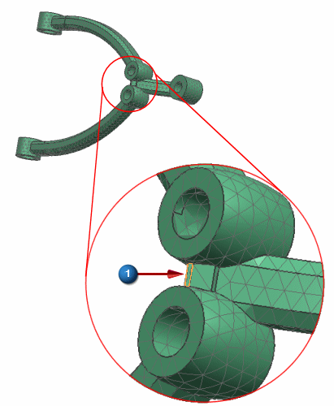

Add a user defined constraint
Add a user defined constraint in the Z-direction at narrow end of the part to remove a singularity that is caused by allowing the model to spin about the Y-axis. We are not modeling the full model and are missing boundary conditions that would eliminate this singularity.

 User Defined Constraint (Design Simulation toolbar,
User Defined Constraint (Design Simulation toolbar,  Constraint Type list)
Constraint Type list)
-
Select a face on the outside surface between the two holes as shown in the following figure.



-
Degrees of freedom
DOF3
Fixed

-
OK